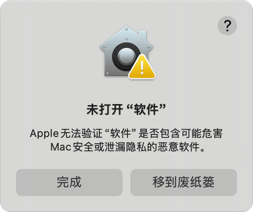
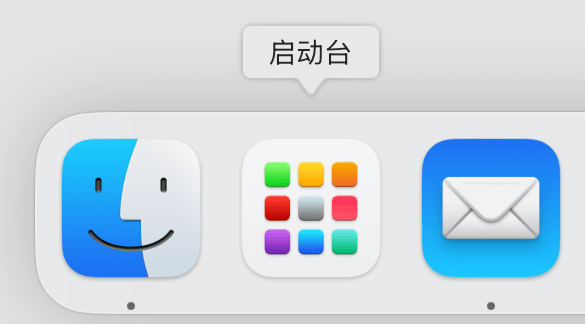
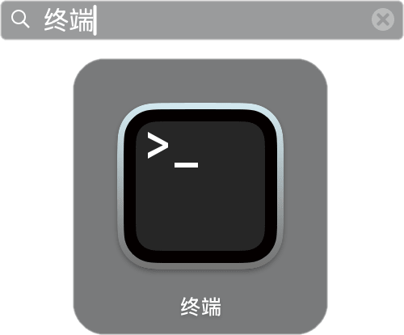
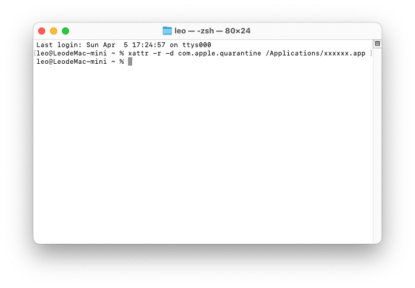

如果你在 macOS 上启动 App 时提示 “App 已损坏”或“无法打开，来自身份不明的开发者”，可以先尝试按照下面的步骤修复问题。


终端 应用。

在终端输入下面这一行命令：
xattr -r -d com.apple.quarantine /Applications/xxxxxx.app

输入命令后按回车执行。如果没有显示报错信息，说明一切正常；可以尝试启动软件，应该可以正常运行了。